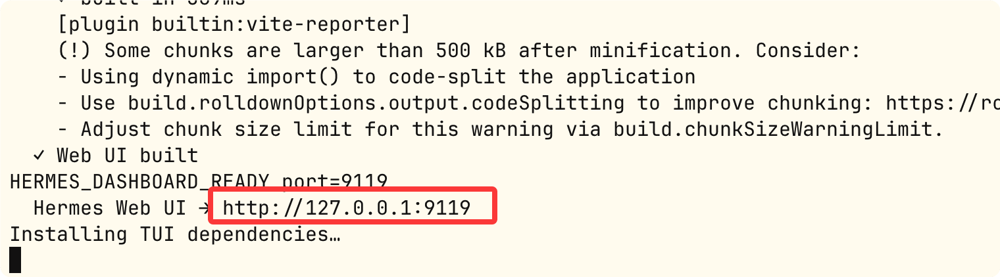

Hermes Agent デプロイモードとDashboard
HermesはノートPCからGPUクラスターまでの全シナリオのデプロイをサポートします。
この章では、6つのデプロイモードの設定方法、適用シーン、比較、およびWeb Dashboardの視覚化管理機能を順に紹介します。
6つのデプロイモードの詳細解説
モード1: ローカルCLI
最もシンプルなデプロイ方法で、Agentはあなたと同じマシンで動作し、設定は一切不要です。
直接対話：
hermes chat
TUIインターフェース：
hermes --tui
デスクトップアプリ：
hermes desktop
特徴：最もシンプルで設定不要。開発や個人の日常使用に適しています。
モード2: ゲートウェイサービス
Agentを24時間365日オンラインのBotとして継続稼働させ、メッセージプラットフォームからのメッセージにいつでも応答し、定期タスクをサポートします。
フォアグラウンドでデバッグ実行し、ログをコンソールに直接出力：
hermes gateway
システムサービスに登録してバックグラウンドで起動、本番環境での常駐用：
hermes gateway install && hermes gateway start
ゲートウェイの稼働状態を確認：
hermes gateway status
その他のコマンド：
# 停止服务 hermes gateway stop # 重启服务 hermes gateway restart # 卸载系统服务 hermes gateway uninstall
特徴：Agentが常時オンライン。個人Botやチームアシスタントなどのシーンに適しています。
モード3: Dockerコンテナ
公式イメージはマルチProfileゲートウェイをサポートし、s6-overlayがプロセスを管理します。
公式イメージをプル：
docker pull nousresearch/hermes-agent:latest
実行（設定ディレクトリをマウント）：
docker run -d \ --name hermes \ -v ~/.hermes:/root/.hermes \ -e OPENROUTER_API_KEY=sk-or-... \ -e TELEGRAM_BOT_TOKEN=... \ nousresearch/hermes-agent:latest
Docker内のマルチProfileゲートウェイはs6-overlayが自動的に監視します。
hermes profile creates6サービスのスロットを自動登録し、Docker再起動後は以前実行されていたすべてのゲートウェイを自動復元します。
Agentの端末コマンドもコンテナ内で実行させる：
例
# Dockerバックエンド：Agentのコマンドはコンテナ内で実行
terminal:
backend: docker
docker_image: "nikolaik/python-nodejs:python3.11-nodejs20"
container_persistent: true
特徴：プロセスとコマンドの二重コンテナ分離。CI/CDや本番環境に適しています。
モード4: SSHリモートサーバー
Agentはローカルで実行されますが、すべての端末コマンドはリモートサーバー上で実行されます。
例
hermes config set terminal.backend ssh
hermes config set terminal.ssh_host user@your-gpu-server.com
# Agentは本機で実行、コマンドはリモートGPUサーバー上で実行
hermes chat
典型的なシーン：ローカルでメッセージを送信し、AgentにリモートGPUサーバー上でモデルのトレーニングや大規模データセットの処理を実行させます。
モード5: Modal Serverless
AgentはModalクラウドサンドボックス（VM）内でコマンドを実行し、アイドル時はほとんど費用が発生しません。
例
hermes config set terminal.backend modal
特徴：従量課金制で、突発的な高負荷計算タスクに適しています。
モード6: Daytona マネージドワークスペース
Hermesプロセスと端末サンドボックスはすべてクラウド上にあり、ローカルマシンに一切依存しません。
例
terminal:
backend: daytona
特徴：完全クラウド型のマネージドクラウド開発環境。
6つのモードの比較
| モード | Hermesの場所 | コマンドの実行場所 | 適したシーン |
|---|---|---|---|
| ローカルCLI | 本機 | 本機 | 開発、個人の日常 |
| ゲートウェイサービス | 本機/サーバー | 本機/サーバー | 24/7 Bot |
| Docker | コンテナ | コンテナ内 | 分離、CI/CD |
| SSHリモート | 本機 | リモートサーバー | GPU計算、ビッグデータ |
| Modal | 本機 | ModalクラウドVM | サーバーレス、一時計算 |
| Daytona | クラウド | クラウドコンテナ | 完全クラウド |
Web Dashboard
DashboardはHermesの視覚化管理インターフェースであり、任意のProfileの設定、モデル、スキル、MCP、セッションを管理できます。
Dashboardを起動
以下のコマンドでDashboardを起動：
hermes dashboard

起動画面は以下の通り：

skillsを表示：

関連コマンド：
# 启动 Dashboard（默认 Profile） hermes dashboard # 启动并预选指定 Profile coder dashboard # 指定端口 hermes dashboard --port 8080
Dashboard機能一覧
| 機能モジュール | 説明 |
|---|---|
| Profile切り替え | サイドバーで異なるProfile間を切り替え可能、再起動は不要 |
| Models | メインモデルと補助モデルを視覚的に設定し、各モデルのToken使用量と費用統計を確認 |
| Skills | スキルの閲覧、インストール、管理。「Learn a skill」パネルを使ってドキュメントからスキルを生成 |
| MCP | MCPディレクトリを閲覧し、インストール済みサーバーの詳細情報を確認、ワンクリックでインストール |
| Chat | ブラウザ上で現在のProfileのAgentと直接対話 |
| Cron | 定期タスクの表示と管理 |
クリックしてノートを共有
<p style="font-size:14px;">ノートはこの記事の内容を拡張したものである必要があります！</p><br> <p style="font-size:12px;"><a href="../tougao.html" target="_blank">記事の投稿は、こちらをクリック</a></p> <p style="font-size:14px;"><a href="../w3cnote/runoob-user-test-intro.html" target="_blank">登録招待コードの取得方法</a></p> <h3 class="text-muted"><i class="fa fa-info-circle" aria-hidden="true"></i> ノートを共有する前に<a href=";.html" class="runoob-pop">ログイン</a>が必要です！</h3> <p><a href="../w3cnote/runoob-user-test-intro.html" target="_blank">登録招待コードの取得方法</a></p>